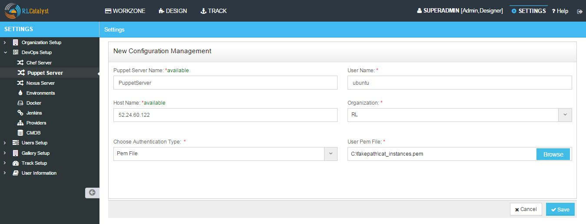
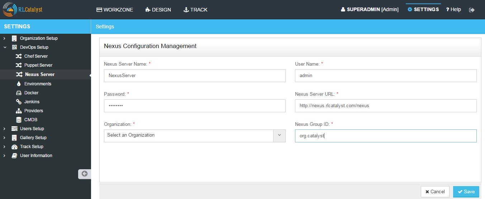
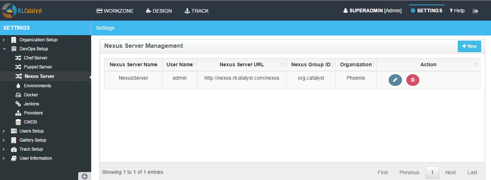
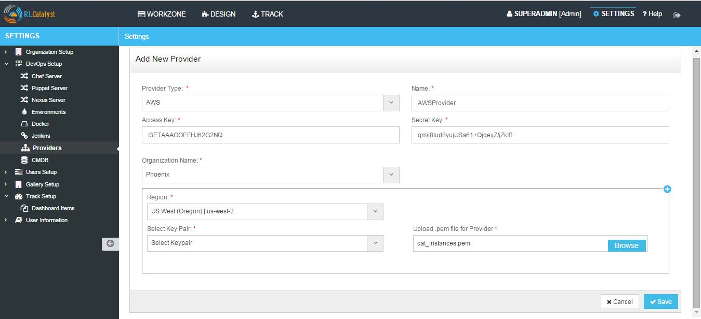

Devops Setup¶
Configure Chef Server
RL Catalyst allows you to configure your chef server. You can configure only one chef server for one organization. Same chef server cannot be associated to multiple organizations. To configure a new server follow the steps below:
- From the main menu click on Settings
- Once click on Settings, from the side menu click on Devops Setup
- Click Chef Server
- Click on +New button provided
- Provide a configuration name in the Name box
- Provide a Chef user name in User Name box
- Provide or specify the Chef URL for the server to be configured
- Choose the organization from the Organization drop down list
- Provide/Upload the user PEM file provided by the Chef Server in the User PEM File box
- Provide/Upload the validator PEM file provided by the Chef Server in the Validator PEM File box
- Provide/Upload the Knife.rb file provided by the Chef Server in the Knife.rb File box
- Provide/Upload the key file which is used for Databag
- Provide/Upload the Template file which is used to Bootstrap node

- Click Save button
- Now your server is configured successfully and listed in the Chef server management page.

Edit and Remove Chef Server configuration
You can edit and remove a server configuration. Follow the steps to edit and remove a Project:
- Click on edit button to edit configuration details
- Click on delete button to remove configuration from the list
Hereby attaching a video which will demonstrate as in how to Setup a Chef Server:
Import nodes from Chef Server
You can import existing nodes from the configured chef server into catalyst by selecting the required Business Groups and Projects. These imported nodes can be operated from the Workzone.
- To import the existing nodes click on import button
- Select the environment from Environment drop down list for the node to be imported

- Click on the Import Nodes button
- Select the business group from Business Group drop down list
- Select the project from the Project drop down list
- Enter the user name to access server for import in the User Name box
- Choose authentication type from the Choose Authentication Type drop down list. RL Catalyst provide two types of authentication, you can choose Password or by uploading PEM file
- Type Password or upload PEM file
- Click on Import button
- Close the popup containing the success message ‘Node imported’
- Click on Workzone
- The imported node along with environment will be available in the Workzone
Chef Factory
- Click on Chef factory icon present in the Action column , Chef factory page will open.

- Go to Sync tab, here all the cookbooks and roles which are present in the chef server will be listed.

- Select the Cookbook and click on Sync
- Close the popup window
- Go to Cookbooks tab, here you can find the downloaded (Synched) cookbook

Databags and Items for Chef server
- In the Chef Server Page, Click on Databag icon in the Action column of your chef server
- Click on + icon above the List of Data Bags column header


- Click on Save button
- Select the Created Databag and create an item by clicking + icon above the ‘Items for -Databagname’ column header
- Enter the ID and Item body

- Select the checkbox Do you want to Encrypt
- Click on Save button
- Now Databag and its item is created. Item body is shown in last column
- Click on Close button to navigate back to Chef server management page
Configure Puppet server
Catalyst allows you to configure your Puppet server. You can configure only one puppet server for one organization. Same puppet server cannot be associated to multiple organizations. To configure a new server follow the steps below:

- From the main menu click on Settings
- Once click on Settings, from the side menu click on Devops Setup
- Click Puppet Server
- Click on +New button provided
- Provide a puppet server name in the Name box
- Provide a puppet user name in User Name box
- Provide a Hostname in Hostname box.
- Choose the organization from the Organization drop down list
- Choose the Authentication by selecting Password / Pem file.
- Enter Password / Upload the pem file.
- Now your Puppet server is configured and listed in the Puppet Server Management page

Import nodes from Puppet Server
You can import existing nodes from the configured puppet server into catalyst by selecting the required Business Groups and Projects. These imported nodes can be operated from the Workzone.
- To import the existing nodes click button.
- Select the node by clicking check box provided in the Actions column
- Click on the Import Nodes button
- Select the business group from Business Group drop down list
- Select the project from the Project drop down list
- Enter the user name to access server for import in the User Name box
- Choose authentication type from the Choose Authentication Type drop down list. RL Catalyst provide two types of authentication, you can choose Password or by uploading PEM file.
- Type Password or upload PEM file
- Click on Import button.
- Close the popup containing the success message ‘Node imported’.
- Click on Workzone. The imported node along with environment will be available in the Workzone
Note: For the imported node using puppet server , Puppet client run icon will be shown.
Hereby attaching a video which will demonstrate as in how to Create Puppet:
Configure Nexus server

- From the main menu click on Settings
- Once click on Settings, from the side menu click on Devops Setup
- Click Nexus Server
- Click on +New button provided
- Provide a Nexus server name in the Name box
- Enter nexus server username in the UserName box
- Enter nexus server password in the Password box
- Enter nexus server URL in the URL field
- Select the Organization
- Enter Nexus group ID

- Click on Save button.
- Now the Nexus server setup is ready and listed in the Nexus Server page.
Hereby attaching a video which will demonstrate as in how to Create Nexus:
Setup Environments
In an Organization you can create multiple Environments, for example, Production, Development, Testing and so on.
Follow the steps to setup a new Environment in an Organization:
- From the main menu click on Settings
- Once click on Settings, from the side menu click on Devops Setup
- Click Environments
- Click on +New button provided
- Select the Organization from the Organization drop down list
- Select the server from the Chef Server drop down list
- Click Add link to add new environment to the chef server

- Click on Add button
- Select the environment from the Environment drop down list

- Assign the project by toggling to ‘Yes’
- Click Save button.
- Now the environment is setup and listed in the Environments page

Hereby attaching a video which will demonstrate as in how to Create Environment:
Configure Docker
You can configure the Docker setup with RL Catalyst, follow the steps below:
- From the main menu click on Settings
- Once click on Settings, from the side menu click on Devops Setup
- Click Docker
- Click on +New button provided
- Select the Organization from the Organization drop down list
- Provide a reference name in the Reference Name box
- Provide the registry in the Docker Registry box provided
- Provide the Docker user name User ID box
- Provide the email address to connect to the Docker in the Email Id box
- Enter the Docker password in the Password box

- Click Save button
- Now Docker is successfully configured to RL Catalyst
Hereby attaching a video which will demonstrate as in how to Create Docker:
Configure Jenkins
Configure the Jenkins setup with RL Catalyst, please follow the steps below:
- From the main menu click on Settings
- Once click on Settings, from the side menu click on Devops Setup
- Click Jenkins
- Click on +New button provided
- Select the Organization from the Organization drop down list
- Provide a name in the Name box
- Provide the URL in the Jenkins URL box provided
- Provide the Jenkins user name User ID box
- Enter the Jenkins password in the Password box

- Click Save button
- Now Jenkins is successfully configured to RL Catalyst
Hereby attaching a video which will demonstrate as in how to Create Jenkins:
Configure Providers in RL Catalyst
You can configure multiple Providers of type AWS, AZURE, OPEN STACK and VMWARE within RL Catalyst, please follow the steps below:

- From the main menu click on Settings
- Once click on Settings, from the side menu click on Devops Setup
- Click Providers
- Click on +New button provided
- Select the provider from the Provider Type drop down list (e.g. AWS)
- Provide a name in the Name box
- Provide the access key in the Access Key box
- Provide the secret key in the Secret Key box
- Select the organization from the Organization drop down list
- Select the region from the Region drop down list where your provider is located
- Select the key pair for the provider from the Key Pair drop down list
- Provide/Upload the provider pem file in the Upload.pem file for Provider File box
- Click Save button
- Now Provider is successfully configured to RL Catalyst
Hereby attaching a video which will demonstrate as in how to Create Providers: